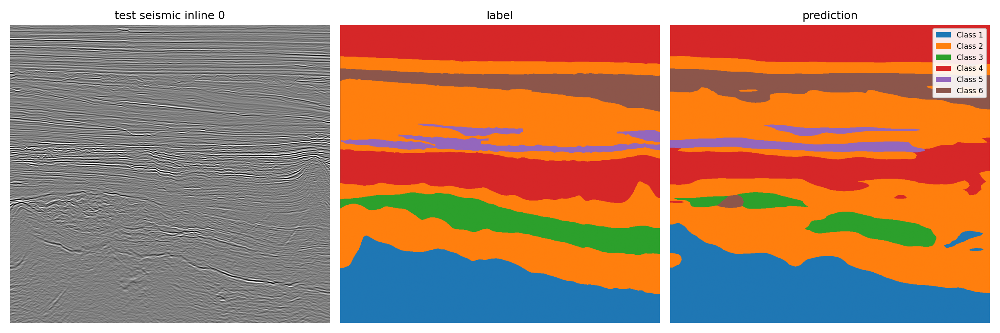
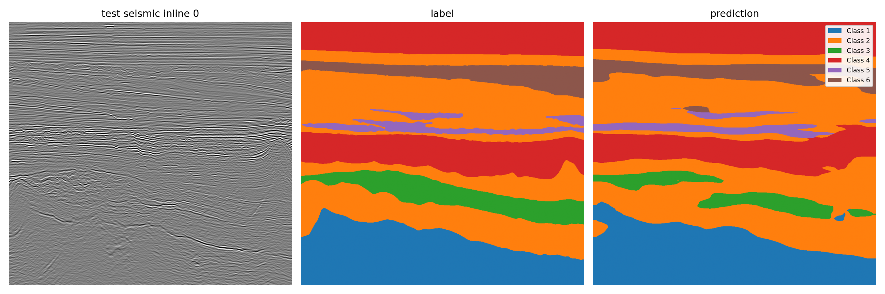
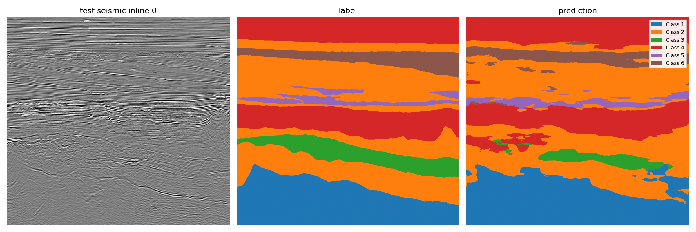

Models: DINOv2 small with FAPM, DINOv3 small with FAPM, and a seismic U-Net
Evaluation: shared spatial split of the labeled Parihaka volume
DINOv3 achieved the highest labeled test mIoU at 0.8447, followed by DINOv2 at 0.8325 and U-Net at 0.7635. DINOv3's advantage over DINOv2 is 0.0122 mIoU, while their best validation scores are nearly identical. DINOv3 also has the best test macro F1 and negative log likelihood (NLL).
The difference between validation and test scores needs careful interpretation. Validation uses eight selected inlines, while test covers 94 complete inlines. Class 5 accounts for 0.042% of validation pixels and 1.733% of test pixels. All three models score higher on test than on validation, but that increase cannot be attributed to better generalization. This report describes one run per model and does not claim statistical significance.
The labeled volume has shape 590 × 782 × 1006, ordered as inline, crossline, and depth. The comparison uses a fixed spatial partition. Training contains 354 inlines in three blocks. Validation occupies [378, 472), with eight full inlines selected for scoring. The labeled test set contains 94 full inlines in [0, 31), [107, 138), and [558, 590). Six eight-inline buffer blocks separate the regions.
The models receive 224 × 224 patches with amplitude, vertical gradient, and depth channels. Each run uses 15 epochs, 4,096 sampled training examples per epoch, and cross entropy with Lovasz loss. Validation and test predictions use overlapping tiles to cover complete inlines. Metrics are computed from an aggregate confusion matrix, so each evaluated pixel contributes once. The best checkpoint is selected by validation mIoU; test metrics are calculated after that selection.
The downloaded artifacts passed python scripts/audit_comparison_outputs.py outputs. All three runs are marked complete. Each manifest lists the expected 16 files, their recorded sizes match the downloaded files, and the split and test inline lists agree across models.
| Model | Best validation mIoU | Test mIoU | Test macro F1 | Test pixel accuracy | Test NLL | Selected epoch |
|---|---|---|---|---|---|---|
| DINOv2 small with FAPM | 0.6749 | 0.8325 | 0.9030 | 0.9416 | 0.1498 | 14 |
| DINOv3 small with FAPM | 0.6748 | 0.8447 | 0.9118 | 0.9447 | 0.1436 | 12 |
| Seismic U-Net | 0.6170 | 0.7635 | 0.8571 | 0.9089 | 0.2244 | 15 |
The two DINO models have essentially equal best validation mIoU. DINOv3 leads on the held-out test set by 1.22 percentage points of mIoU. U-Net trails DINOv3 by 8.13 percentage points on test mIoU. The ranking is consistent across test mIoU, macro F1, pixel accuracy, and NLL, but these are single-run comparisons.
The values below are test IoU for the dataset's numeric class labels. They should not be read as geological facies names.
| Model | Class 1 | Class 2 | Class 3 | Class 4 | Class 5 | Class 6 |
|---|---|---|---|---|---|---|
| DINOv2 small with FAPM | 0.9736 | 0.8742 | 0.8025 | 0.9247 | 0.5780 | 0.8423 |
| DINOv3 small with FAPM | 0.9745 | 0.8799 | 0.8100 | 0.9301 | 0.6315 | 0.8424 |
| Seismic U-Net | 0.9593 | 0.8193 | 0.7385 | 0.8740 | 0.4872 | 0.7023 |
Class 5 has the lowest test IoU for every model. DINOv3 improves its class 5 IoU by 0.0535 over DINOv2. The most frequent class 5 error is prediction as class 2: 309,915 pixels for DINOv2, 227,436 for DINOv3, and 313,840 for U-Net. The full confusion matrices are available in the linked figures below.
The table gives each class's share of evaluated pixels. Class 3 and class 5 are substantially more common in test than in the selected validation inlines.
| Set | Class 1 | Class 2 | Class 3 | Class 4 | Class 5 | Class 6 |
|---|---|---|---|---|---|---|
| Validation | 19.291% | 40.728% | 1.547% | 29.164% | 0.042% | 9.228% |
| Test | 16.003% | 42.344% | 6.122% | 26.599% | 1.733% | 7.198% |
Class 5 validation IoU is 0.0417 for DINOv2, 0.0599 for DINOv3, and 0.0730 for U-Net. The order reverses on test, where DINOv3 leads at 0.6315. The very small validation support for this class is a reason to avoid model selection or broad conclusions based on its validation IoU alone.
The training curves show falling loss and rising validation mIoU for all three models. Validation improvement becomes modest in the later DINO epochs. U-Net continues to improve through its final epoch, which is also its selected checkpoint. DINOv2 selects epoch 14 and DINOv3 selects epoch 12. Epoch numbers in this report are one based.
| Model | Training batch | Total parameters | Recorded epoch time | Peak GPU memory |
|---|---|---|---|---|
| DINOv2 small with FAPM | 128 | 30.24 million | 8.24 minutes | 46.75 GB |
| DINOv3 small with FAPM | 128 | 29.78 million | 22.46 minutes | 47.18 GB |
| Seismic U-Net | 256 | 8.29 million | 9.90 minutes | 50.51 GB |
The times sum epoch_time_sec over 15 epochs. They exclude data preparation, final test evaluation, and Colab setup. Hardware identity and competing workload are not established by these artifacts, so the table is descriptive rather than a controlled speed benchmark. U-Net's training batch differs from the two DINO runs, which also affects optimization step count and limits a strict compute comparison.
The three prediction previews use the same test inline, inline 0. In this example, the DINO predictions follow the main layered structures more continuously. The U-Net prediction contains more fragmented patches. This is a qualitative observation from one inline; the reported test metrics cover all 94.

Training curves · Test confusion matrix

Training curves · Test confusion matrix

Training curves · Test confusion matrix
Class composition differs sharply. Validation has 2,616 class 5 pixels among 6,293,536, while test has 1,281,905 among 73,949,048. Their respective shares are 0.042% and 1.733%. The limited class 5 support in validation makes its class 5 IoU especially sensitive to which eight inlines were selected. The test set is larger and has a different class balance.
The spatial buffer is narrower than in the earlier protocol. The distributed test design uses eight-inline buffers. This keeps training, validation, and test in distinct physical regions, but nearby geological structures may still be correlated. The result should be interpreted as performance on this fixed spatial holdout, not as evidence of independence across all possible surveys.
The runs are not identical in every training setting. The U-Net batch size is 256, compared with 128 for the two DINO models. The models also differ in architecture and parameter count by design. All three share the data split and evaluation method, which supports a direct comparison of their recorded predictions, but a controlled architecture ablation would require additional matched runs.
Uncertainty is not measured. There is one completed run per model and one fixed split. No confidence interval, seed variance, or statistical test is available. The 0.0122 mIoU difference between DINOv3 and DINOv2 should therefore be treated as an observed result, not a guaranteed performance advantage.
DINOv3 has the strongest recorded test performance in this comparison, including the best result on the difficult class 5. DINOv2 is close on validation and test mIoU. U-Net is smaller and remains a useful baseline, but its test score is lower. The next experiment that would most improve confidence is a repeated comparison with matched batch settings and additional spatial splits or seeds.